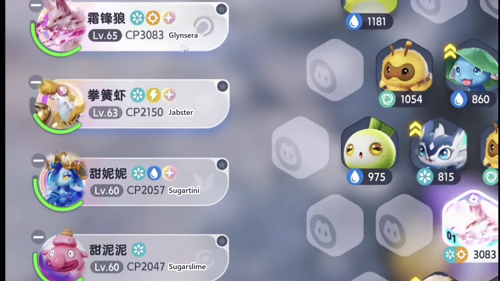
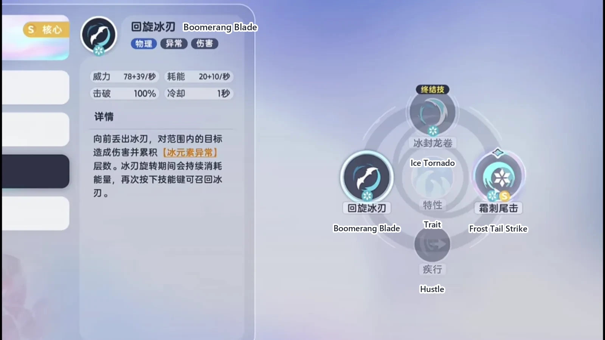
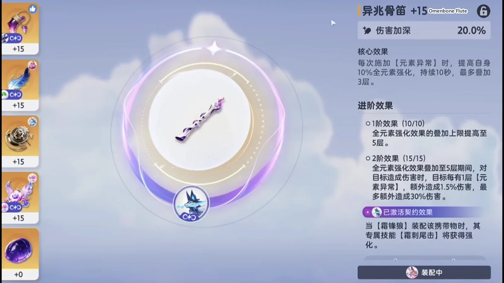
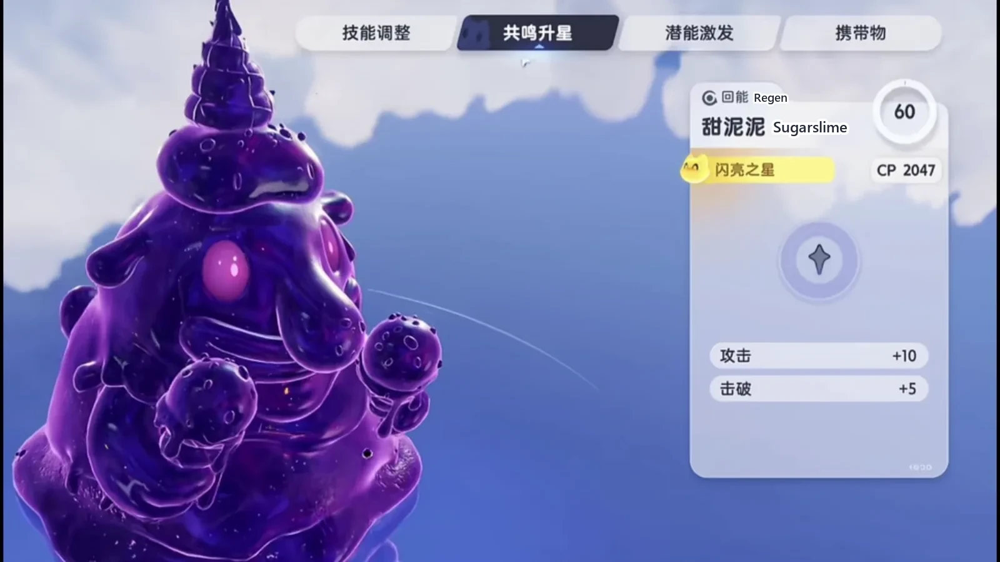
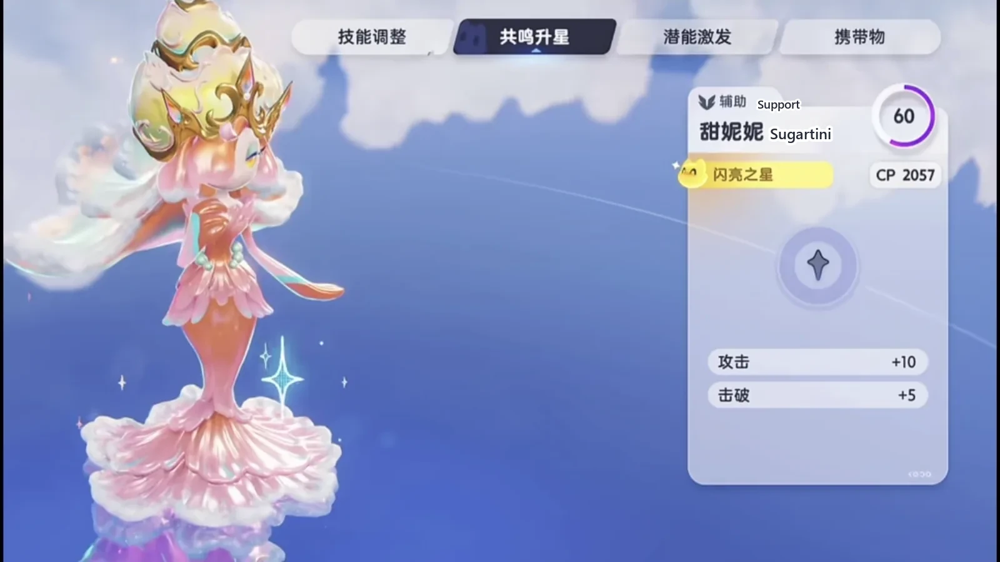
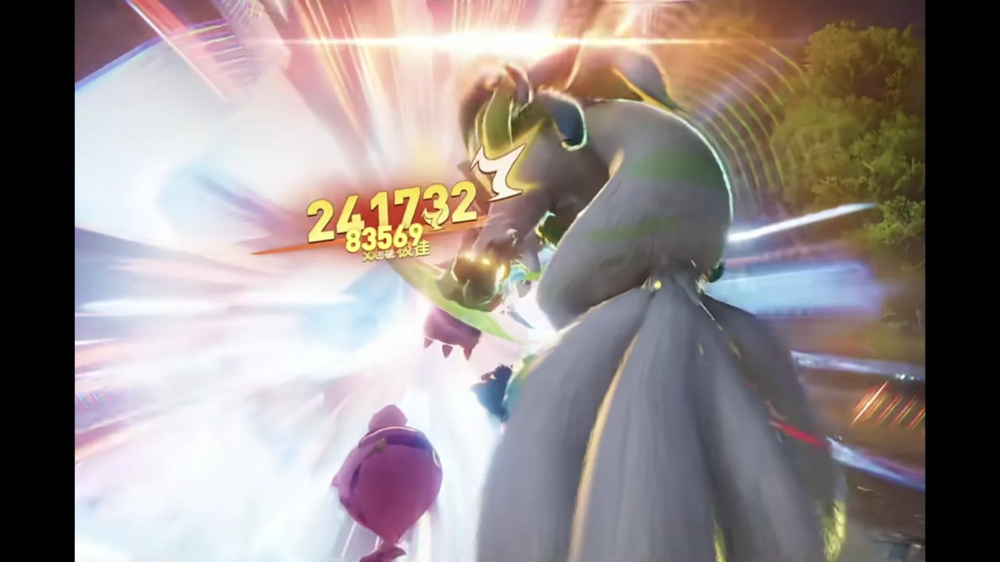

Home首页 / Guides攻略 / Aniimo's Best Ice Team: One Small Skill from Glynsera Prints 240,000《伊莫》新版本冰队最强配队：霜锋狼一套技能 24 万伤害
Checked核对于 November 3, 20262026 年 11 月 3 日
Aniimo's Best Ice Team: One Small Skill from Glynsera Prints 240,000《伊莫》新版本冰队最强配队：霜锋狼一套技能 24 万伤害
A four-Aniimo Ice party: Sugarslime lays five stacks at the opening, Sugartini lifts the damage from off the field, Jabster takes the gauge down, and Glynsera closes it with one Frost Tail Strike — plus the order that cannot be reversed.一套四只的冰系阵容：甜泥泥开局铺五层，甜妮妮在场下抬伤害，拳簧虾把韧性打穿，最后霜锋狼一发霜刺尾击收走 —— 以及那条不能反过来的顺序。
The new version finishes the Ice party off: four slots that lock together as tight as any in the game, and every one of them doing one job. Three of them lay the road and Glynsera drives down it once, inside a single window. Sugarslime opens with five stacks of Ice Debuff, Sugartini keeps the debuff running from off the field and lifts the party's skill damage on its way past, Jabster takes the break gauge down, and Glynsera inherits the lot — Boomerang Blade stacks it to the ceiling, then one Frost Tail Strike slams it shut. Run the order cleanly and that one small skill prints 240,000.新版本把冰队补成了完全体，四个位置咬得极紧，每一只都只管一件事。三只给霜锋狼铺路，让它在同一个窗口里把伤害一次倒干净。甜泥泥开局铺五层冰元素异常，甜妮妮在场下继续挂异常、顺手把全队的技能伤害抬上去，拳簧虾把韧性打穿，最后霜锋狼接手：回旋冰刃把层数叠满，霜刺尾击一记砸下去。顺序走顺之后，这一记小技能能打出 24 万。
Four slots, and each one owns a stretch of the fight四个位置，各管一段
The main damage is Glynsera (Ice · DPS). The break slot is Jabster (Dark · Ice · Break), the buff slot is Sugartini (Ice · Support), and the energy slot is Sugarslime (Ice · Regen).主 C 是霜锋狼（Glynsera，冰 · 输出），击破位是拳簧虾（Jabster，暗 · 冰 · 击破），增益位是甜妮妮（Sugartini，冰 · 辅助），回能位是甜泥泥（Sugarslime，冰 · 回能）。
Sugartini and Sugarslime are two branches off the same evolution line, and they are nothing alike on either count — they do not look remotely similar and they do not do remotely similar work. One hangs debuffs from off the field and pushes the party's damage up; the other owns the five stacks at the opening and the energy pickups that keep dropping afterwards. The names differ by a single character and the jobs do not swap. Bring the wrong one and the chain comes apart.甜妮妮和甜泥泥是同一条进化线上分出去的两支，外形完全不是一回事，干的活也完全不是一回事：一个在场下挂异常、给队友抬伤害，一个专门负责开局那五层和一路掉下来的回能道具。名字只差一个字，功能不能互换，带错一只整条链子就断了。

Glynsera: stack it to the top, then bring it down霜锋狼：先叠满，再砸下去
The skill bar carries Boomerang Blade and Frost Tail Strike. Boomerang Blade is the opener: it piles up Ice Debuff stacks and lights the held item's effect in the same cast. Frost Tail Strike is the payout, and whether the stacks are there is the whole question it asks. The 240,000 out of one small skill is this one.技能栏放回旋冰刃和霜刺尾击。回旋冰刃是起手那一招，负责把冰元素异常的层数堆起来，同时把携带物的效果点着；霜刺尾击是收伤害的那一招，层数够不够，全看它这一下。一个小技能打到 24 万，说的就是它。
On the held item, wear the new Omenbone Flute. The flute sits on Glynsera so well it is almost unfair, and it suits any Aniimo that can supply elemental anomaly as well as this one does.携带物戴新出的异兆骨笛。这支笛子戴在霜锋狼身上合得离谱，能提供元素异常的伊莫戴着也合适。
On Potential, put the points into ATK and Regen. Resonance and star rank as far as your materials stretch — a main damage dealer is worth pushing as high as you can take it.潜能主点攻击和回能。共鸣和升星量力而行，主 C 尽量给高一点。


Sugarslime: the opening five stacks everyone is waiting on甜泥泥：开局那五层，全队都在等
Sugarslime's core is Sugar-Rush Tackle: one cast puts five stacks of Ice Debuff on the target and tosses out an energy pickup with them. Those five stacks are where the whole chain starts — Jabster's extra damage is waiting on them, and Glynsera's closing blow is waiting on everything that comes before it.甜泥泥的核心是热情扑倒，一放就给五层冰元素异常，外加一个回能道具。这五层是整条链子的起点 —— 拳簧虾的额外伤害等着它，霜锋狼最后那一爆也等着前面这一串。
It also carries Sugary Gravity, a skill that only earns its slot in particular dungeons — the one with the black giant among them.它还有一个技能叫甜腻引力，特定副本里用得上，比如黑巨怪那个。
Build it around exactly one thing: all of the Potential into Regen, and a Regen held item to match. Resonance is not worth spending on.养成只盯一件事：潜能全点回能，携带物也带回能，共鸣不用管。

Sugartini: off the field, still paying out甜妮妮：人在场下，加成照给
Sugartini's core is Sugarfish Wave. The point of it is that it keeps working after you switch away — the debuff carries on being applied from off the field.甜妮妮的核心技能是甜鱼浪潮。这一招的好处是人不在场上也能持续挂异常，切走之后效果还在走。
What it is really worth is the trait and the ultimate. The trait gives the party 45% skill damage, and the ultimate adds another 45% ice boost on top. Those two are what Glynsera's closing blow is standing on.真正值钱的是它的特性和大招。特性给队友 45% 的技能伤害，大招再给 45% 的冰元素异常。这两份加成，就是霜锋狼那一爆的底气。
Wear an ATK held item, put all of the Potential into ATK, and leave Resonance wherever it happens to be.携带物戴攻击，潜能只点攻击，共鸣随意。

Jabster: cashing five stacks of Ice into break拳簧虾：把五层冰异常换成击破
Its skills are Spring Combo and Spring Fist. Spring Combo pays extra damage on a target carrying Ice Debuff, so the five stacks Sugarslime opened with get turned into real damage right here.技能带弹簧连击和弹簧拳。弹簧连击对冰元素异常有额外伤害，甜泥泥开局铺下的那五层，到这里就兑成了实打实的伤害。
Wear a break held item and put the Potential into break only. Resonance is optional — skip it entirely and it still does the job it is here for.携带物戴击破的，潜能只点击破，共鸣量力而行，不点也罢，它该干的活一样干得完。
The full loop, and the order cannot be flipped一整套循环，顺序不能反
Open on Sugarslime and cast Sugar-Rush Tackle first — five stacks of Ice Debuff and an energy pickup land together. Once that is down you can leave it: the trait keeps scattering energy pickups for the rest of the fight, so there is always something to pick up.开局甜泥泥起手，先放热情扑倒，五层冰元素异常和回能道具一起落地。这一步放下就不用再管它，它的特性会继续往外掉回能道具，整场都有得捡。
Switch to Sugartini straight after and cast Sugarfish Wave, then go to Jabster immediately.紧接着切甜妮妮，放甜鱼浪潮，然后立刻切拳簧虾。
Every skill in Jabster's stretch wants to be charged. Charge Spring Combo first so it picks up the Ice Debuff bonus, then charge Spring Fist — and land all three punches, because the third one is what takes it into the all-out burst state. Once it is in there it can throw enhanced skills without charging. Pick the energy pickups off the floor on the way through.拳簧虾这一段，每个技能都要蓄力。先蓄弹簧连击，吃到冰元素异常的加成；再蓄弹簧拳，这一拳记得把三次出拳全部打完，打完就直接进全力爆发阶段。进了这个阶段，不蓄力也能打出强化技能。击破的同时顺手把地上的回能道具捡了。
After the break, switch back to Sugartini and fire its ultimate. It has to catch both the ultimate and the trait, which is why the order is Sugartini first and the main damage dealer second.击破之后切回甜妮妮放大招。这一下要吃到甜妮妮的大招和特性两份加成，所以顺序是先切它，再切主 C。
Then switch to Glynsera in the same breath. Boomerang Blade first, stacking the anomaly up layer by layer and lighting the Omenbone Flute as it goes. There is a hard line here: five stacks minimum. Five stacks come fast, but firing Frost Tail Strike before they are there is a wasted cast. Once the flute is at full, drop Frost Tail Strike — that is where the 240,000 comes out.最后秒切霜锋狼。先放回旋冰刃，一层一层把异常叠上去，同时把异兆骨笛的效果点着。这里有一条硬线：至少叠满五层。五层叠得非常快，但没到五层就放霜刺尾击，等于白打。骨笛效果拉满之后再砸霜刺尾击，24 万就是这么出来的。
Frost Tail Strike is close to having no cooldown at all. Pick the energy pickups up promptly and it goes several times in a single fight — the loop's whole damage output is loaded onto this one skill.霜刺尾击几乎没冷却。回能道具捡得及时，这一招一场里能连着放好几次，整套循环的伤害全压在它身上。

The one weak spot is sustain唯一的短板是续航
There is no healing in this party at all. The health bar only goes one way and it does not come back on its own, so the break has to be decisive and the burst has to land fast. Do not let it turn into a war of attrition.这套阵容里没有回血技能。血线只往下走，不会自己回来，所以击破要打得果断，爆发要倒得快，别把一场拉成消耗。
Keep the execution up and the gap barely shows. Fall behind on it and it is the one thing that will lose you the fight.操作跟得上，这个短板就不太露；跟不上的话，它会是唯一让你翻车的地方。
The opening step decides everything after it起手那一步，决定后面全部
The order once more: Sugarslime opens with Sugar-Rush Tackle, Sugartini follows with Sugarfish Wave, Jabster charges through the break, Sugartini comes back for its ultimate, Glynsera stacks Boomerang Blade to five, and Frost Tail Strike closes it.把顺序再捋一遍：甜泥泥热情扑倒起手，甜妮妮接着甜鱼浪潮，拳簧虾蓄力打穿击破，甜妮妮回场放大招，霜锋狼回旋冰刃叠满五层，最后霜刺尾击收尾。
The strength of this party is not in any one of the four — it is in the order. Sugarslime's five stacks have to be down first or Jabster has nothing to cash; Sugartini's ultimate has to be fired on the switch back or Glynsera never sees both halves of it; Boomerang Blade has to go all the way to five or the Omenbone Flute never fills. Every step is clearing the way for the next one. Get the opening right and the rest runs itself.这套阵容的强度不在某一只身上，在顺序上。甜泥泥那五层得先落下去，拳簧虾的额外伤害才有东西可兑；甜妮妮的大招得切回去开，霜锋狼才吃得到两份加成；回旋冰刃得老老实实叠到五层，异兆骨笛的效果才拉得满。每一步都在给下一步让路，起手做对了，后面自然顺。
More guides相关攻略
- Aniimo's Water Team: Three of the Four Are There to Set Up Sherro's One Sword《伊莫》水系配队：一剑流星骑士，三只铺路只为最后那一剑 — A four-Aniimo Water party built around one damage dealer: what Piopiota, Panpanta and Turbo each lay down before Sherro comes in, and the order to switch them in.一套四只的水系阵容，全部围绕一个输出位搭：星骑士进场之前，漂漂獭、胖胖獭、蓬蓬羊各负责什么，以及换人的顺序。
- Aniimo's Strongest Electric Team: Three of the Four Are There to Set Up Fulmintis《伊莫》最强电系阵容，四只里三只都在给电刺螳螂铺路 — A four-Aniimo Electric party built around one damage dealer: what each of the other three does before Fulmintis comes in, and the order to switch them in.一套四只的电系阵容，全部围绕一个输出位搭：电刺螳螂进场之前，另外三只各自负责什么，以及换人的顺序。